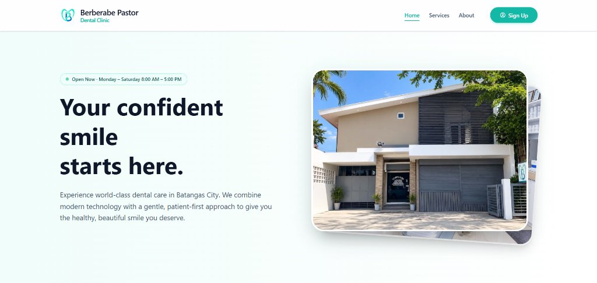

Capstone Project
A Web-Based Appointment and Inventory System for Berberabe Pastor Dental Clinic
A web-based system built to help Berberabe Pastor Dental Clinic move away from manual, paper-based processes. It lets patients book appointments online and helps clinic staff manage schedules, patient records, and dental supplies in one place, making daily operations faster, more organized, and more convenient for both the clinic and its patients.
Project highlights
- To develop an online appointment scheduling module that enhances the organization and handling of patient appointments.
- To digitalize patient records and ensure quick, accurate, and organized retrieval of patient information.
- To develop a dental supply inventory system that integrates image processing for the automatic recognition (AI Scanner) and stock monitoring of dental tools, equipment, and consumable items.